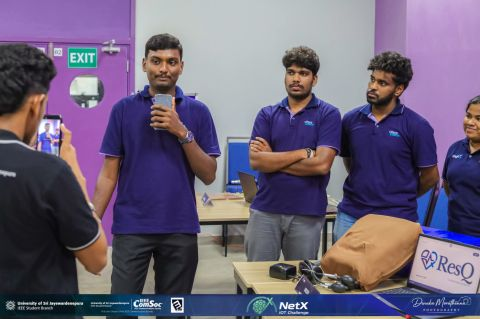
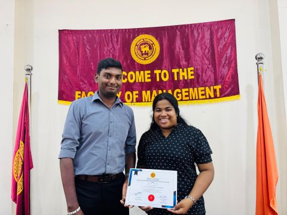
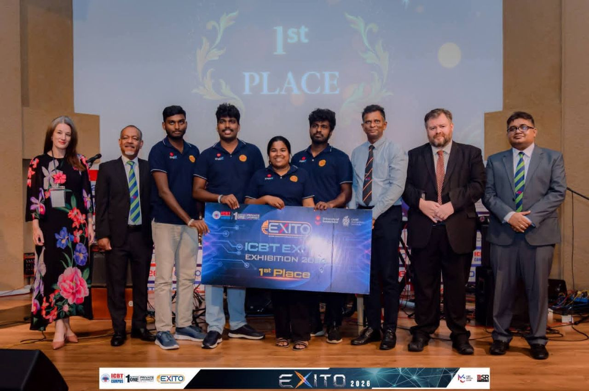
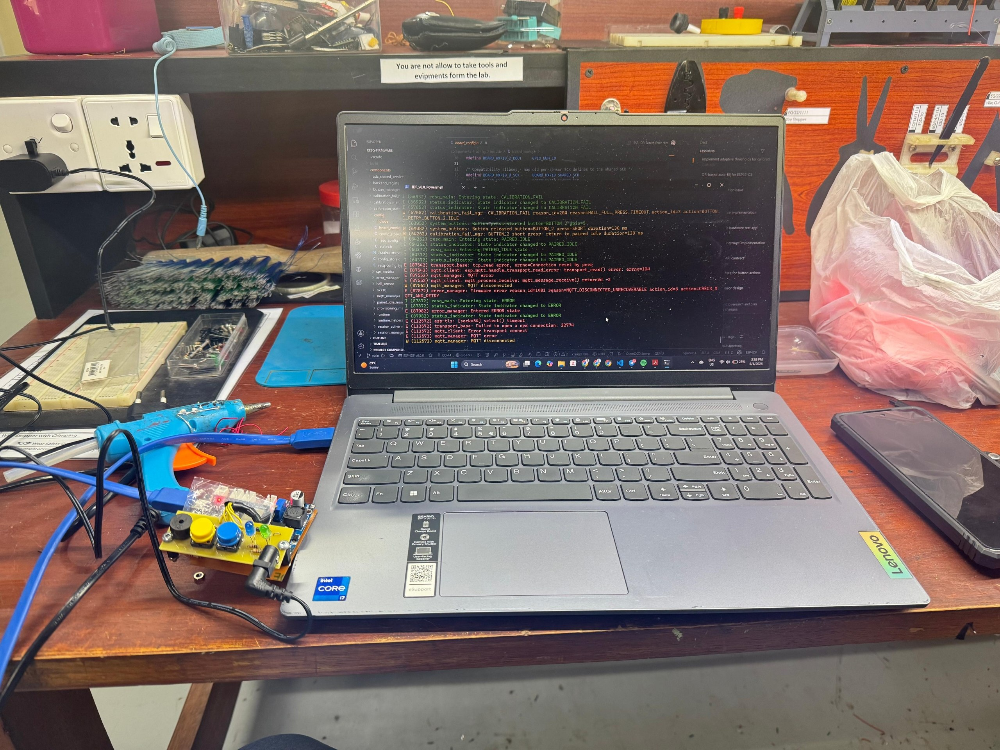
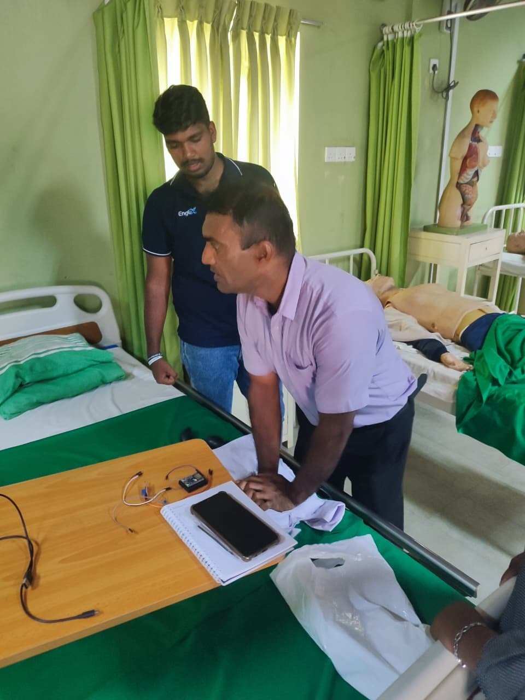
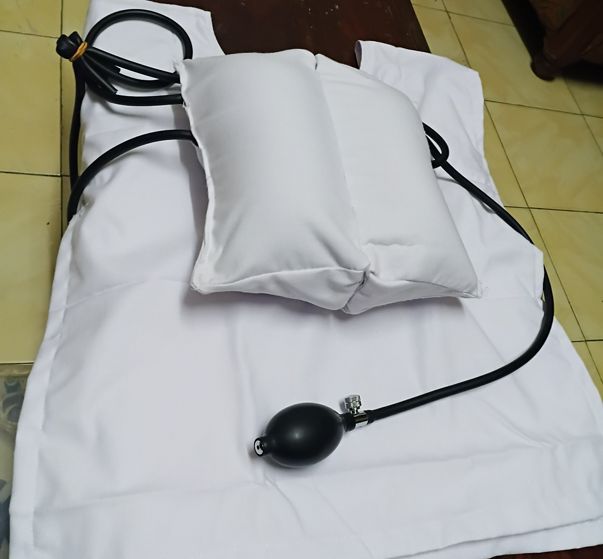

ResQ wins SLIIT CODEFEST 2026 InnovIoT
The team earned the top award in the Innov IoT category, with a cash prize of LKR 75,000 under the official competition structure.
Updates from our development journey — project milestones, hardware development, firmware, testing, medical feedback, competition results, and everything we learn along the way.
The team earned the top award in the Innov IoT category, with a cash prize of LKR 75,000 under the official competition structure.

The final evaluation brought the manikin overlay, ESP32-C3 firmware, local MQTT path, LocalHub, dashboard, calibration, and session workflow together. Cloud synchronization remains under active development.
View presentation
From 58 registered teams and 44 advancing teams, ResQ reached the ten-team Grand Finale at the University of Sri Jayewardenepura.

“Digitalizing CPR Skills Training: A Low-Cost Smart Manikin System with Real-Time Feedback” was selected for oral presentation.

ResQ was named second runner-up at the Open Business Ideation Summit, selected from more than 20 business proposals.

A nearly complete system demonstrated the manikin hardware, firmware, LocalHub, dashboards, calibration, session management, and CPR performance feedback.
View presentation
The team won the Inter-University Robotics & Innovation Challenge at ICBT Colombo Campus, competing among around 20 university teams.

Electronics, state-machine behavior, calibration, MQTT, Spring Boot processing, SQLite persistence, and live dashboard delivery were tested together.

The Faculty of Allied Health Sciences shared feedback on usability, assessment, and training context. This engagement informs development; it is not medical-device certification.

The team demonstrated firmware integration, LocalHub connectivity, a real-time dashboard, and the working prototype overlay.
View presentation
The first jacket structure connected physical chest action to pressure and displacement sensing, an embedded controller, and early visualization.

The initial concept, architecture, budget, and timeline were reviewed, with feedback on CPR standards, cost, and consultation with Allied Health specialists.
View presentation
A consolidated view of the training problem, prototype, ESP32-C3 firmware, local MQTT path, Spring Boot LocalHub, dashboards, calibration, evidence, and outcomes.
View overall presentationThe filter and search work together. Clear the search field or choose All posts to see the complete journey.
Historical Node runtime descriptions do not represent the current LocalHub backend. The verified stack is Windows Tauri + Spring Boot + SQLite, with MQTT from devices and REST + SSE for browser-facing communication.
The current demonstrable path is local-first. Cloud synchronization is marked Under Active Development throughout the project documentation.
View development status